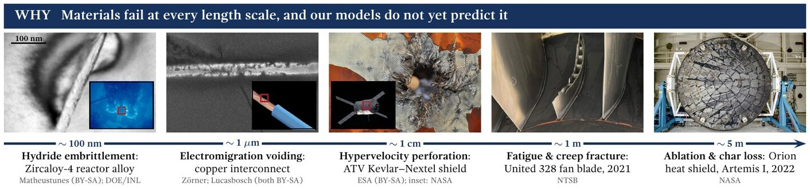
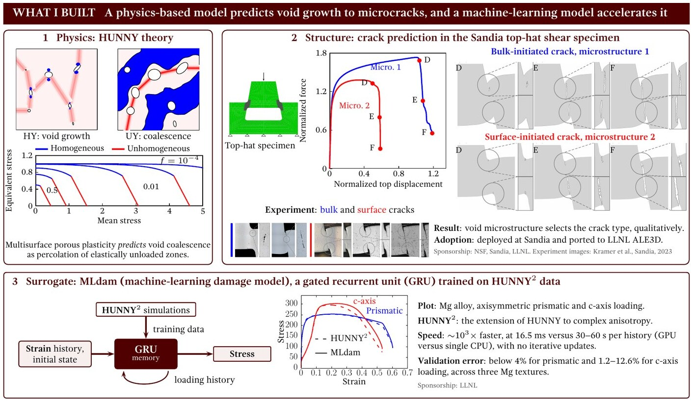
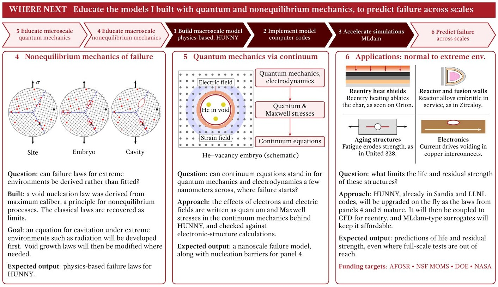

Failure Mechanics across Scales in Extreme Environments
My goal is to predict material failure across scales, under extreme conditions.
My research lies at the intersection of theoretical and computational mechanics and concerns plasticity, damage, and failure of materials where predicting residual strength and damage tolerance is crucial. My approach is based on nonequilibrium mechanics, quantum mechanics, and analytical and computational homogenization, whereby physical processes from lower scales are carried to the macroscale constitutive relations used to simulate failure in large-scale structures.
Why: Materials fail at every length scale

Failure initiates at the nanoscale in some systems and is decided at the scale of the structure in others, yet a model that carries physics across these scales is still lacking. Concerted efforts in modeling ductile failure have led to significant progress, but developing fully predictive models and implementing them in robust finite element codes remains a challenge. For instance, predicting failure under extreme shearing states proved difficult even for traditional materials in the recent Sandia Fracture Challenge. This difficulty is even more pronounced under extreme environments, often requiring over-conservative design margins that penalize performance. My work started at the micro-to-macro scale transition in predicting the failure of materials.
What I built: From microvoids to cracks in structures

Thus far, my research has predicted failure from the microvoid scale to the specimen scale, and has begun to make this prediction affordable. My work on ductile failure hinges on the mechanics of porous material plasticity, where void nucleation, growth, and coalescence dictate crack initiation and propagation. The key departure from the literature in HUNNY, the unified framework developed during my Ph.D., is that void growth and coalescence are actually predicted rather than put in ad hoc (panel 1). Its predictive capability has been demonstrated through three-dimensional simulations of crack initiation and progression. The top-hat specimen of panel 2 is a key example, because failure in shear is extremely challenging to model from first principles, and the model captures the crack modes observed in experiments. Since such simulations are computationally expensive, I then built a machine-learning damage model trained on HUNNY2 data, retaining the physics at a fraction of the cost (panel 3).
Where next: Educating the models with lower-scale physics

My models rely on phenomenological representations of lower-scale physics, which are generally fitted to experiments, and a fit cannot be trusted where experiments are out of reach, especially under extreme environments. The aim is therefore to educate them with physics from lower scales. To this end, I recently derived a void nucleation law from a variational principle of nonequilibrium systems, the principle of maximum caliber (panel 4); it will next be extended to extreme environments involving radiation. Certain failures start at the nanoscale, where electron flows also matter, so a further resolution will carry quantum effects upward through continuum equations (panel 5). The resulting laws will then be returned to HUNNY, which will also be extended to other material systems (HCP, BCC, and FCC alloys and high-entropy alloys) and extreme loading conditions such as rate and temperature effects. This closes the loop for a complete physics-based failure prediction built on mechanisms from lower scales.
This work bears directly on high-performance materials for blast protection and defense, failure of novel composites for air and space vehicles including reentry heat shields, the residual strength of aging and reusable structures, digital twins for untestable environments such as reactor and fusion walls, and the reliability of electronics packaging. Overall, it aims to deliver a capability that is missing today: predicting failure from the scale at which it starts to the scale of the structure.